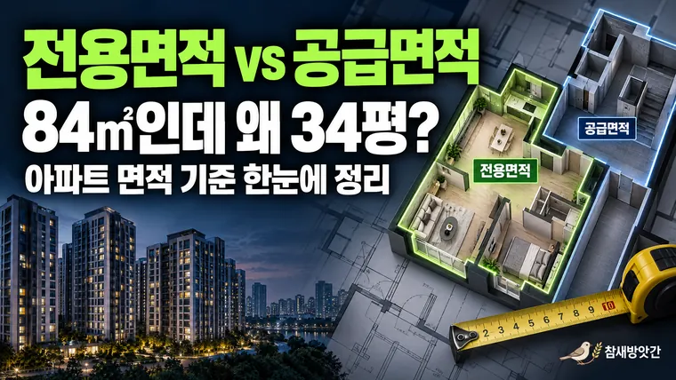

아파트 전용면적과 공급면적은 왜 다를까? 실제 면적을 이해하는 방법
전용면적 84㎡는 약 25.4평이고, 흔히 말하는 34평형은 공급면적 기준입니다. 면적 기준의 차이와 매물을 비교하는 순서를 정리합니다.

아파트 매물을 살펴보다 보면 같은 집인데도 면적이 서로 다르게 표시되는 경우가 있습니다. 부동산 매물 정보에는 전용면적 84㎡라고 적혀 있지만, 공급면적은 110㎡ 이상으로 표시되는 식입니다.
처음 아파트를 알아보는 사람이라면 두 숫자 중 어떤 것이 실제 집의 크기를 의미하는지 헷갈릴 수 있습니다. 특히 과거부터 사용해 온 평수 표현까지 함께 등장하면 면적을 비교하기가 더욱 어려워집니다.
아파트 면적을 정확하게 이해하려면 전용면적과 공급면적이 각각 무엇을 포함하는지 알아두는 것이 중요합니다.
이번 글에서는 아파트 면적을 구분하는 기본 개념과 실제 매물 정보를 확인할 때 주의해야 할 사항을 살펴보겠습니다.
1. 전용면적은 실제로 사용하는 주거 공간을 의미한다
전용면적은 아파트 한 세대가 독립적으로 사용하는 주거 공간의 면적을 의미합니다.
일반적으로 거실, 침실, 주방, 욕실 등 세대 내부의 공간이 여기에 해당합니다.
공동주택의 전용면적은 관련 기준에 따라 외벽의 내부선을 기준으로 산정하며, 다른 세대와 공동으로 사용하는 계단이나 복도 등은 포함하지 않습니다.
예를 들어 전용면적이 84㎡인 아파트라면 해당 수치는 세대 내부의 주거 공간을 나타내는 면적입니다.
다만 실제로 가구를 배치할 수 있는 바닥의 넓이와 전용면적이 완전히 일치하는 것은 아닙니다. 내부 벽체나 기둥 등도 공간 구성에 영향을 주기 때문입니다.
발코니는 전용면적에 포함될까?
아파트 면적을 확인할 때 자주 등장하는 질문 중 하나가 발코니의 포함 여부입니다.
일반적인 아파트에서 발코니는 전용면적과 별도로 구분되는 서비스면적에 해당합니다.
발코니 확장을 통해 거실이나 침실 공간이 넓어지더라도 등기상 전용면적이 그만큼 증가하는 것은 아닙니다.
따라서 같은 전용면적의 아파트라도 발코니 구조와 확장 여부에 따라 실제 공간 활용에는 차이가 생길 수 있습니다.
2. 공급면적은 전용면적보다 왜 클까?
공급면적은 전용면적에 주거공용면적을 더한 개념입니다.
주거공용면적에는 아파트 입주민이 공동으로 이용하는 계단, 복도, 엘리베이터 홀 등의 면적이 포함됩니다.
기본적인 계산 구조는 다음과 같습니다.
공급면적 = 전용면적 + 주거공용면적
예를 들어 어떤 아파트의 면적 정보가 다음과 같다고 가정해 보겠습니다.
| 면적 구분 | 면적 |
|---|---|
| 전용면적 | 84㎡ |
| 주거공용면적 | 28㎡ |
| 공급면적 | 112㎡ |
이 아파트의 공급면적은 112㎡입니다.
이를 평으로 환산하면 약 33.9평이 됩니다.
일상적으로 34평형 아파트라고 부르는 주택이 실제 매물 정보에서는 전용면적 84㎡로 표시되는 이유도 이와 관련이 있습니다.
다만 아파트 단지와 평면 구조에 따라 주거공용면적은 달라질 수 있으므로 모든 전용 84㎡ 아파트가 동일한 공급면적을 갖는 것은 아닙니다.
계약면적은 또 무엇일까?
아파트 관련 자료에서는 공급면적 외에 계약면적이라는 용어도 등장합니다.
계약면적은 일반적으로 공급면적에 기타공용면적을 더한 면적입니다.
기타공용면적에는 관리사무소, 주민공동시설 등 주거공용면적 외의 공용시설 면적이 포함될 수 있습니다.
따라서 전용면적, 공급면적, 계약면적은 서로 다른 기준으로 산정된 숫자라는 점을 기억해야 합니다.
3. 같은 전용면적이라도 집이 다르게 느껴지는 이유
아파트를 직접 방문해 보면 전용면적이 같은데도 어떤 집은 넓게 느껴지고, 다른 집은 상대적으로 좁게 느껴지는 경우가 있습니다.
이는 면적이라는 숫자만으로 실제 공간의 활용도를 모두 설명할 수 없기 때문입니다.
대표적인 차이는 평면 구조에서 발생합니다.
거실과 침실의 배치, 복도의 길이, 주방의 형태, 수납공간의 위치 등에 따라 생활 공간을 활용하는 방식이 달라집니다.
예를 들어 복도가 길게 배치된 구조는 이동 공간이 차지하는 비중이 상대적으로 클 수 있습니다.
반면 거실을 중심으로 각 방이 효율적으로 배치된 구조는 같은 전용면적에서도 공간 활용이 편리하게 느껴질 수 있습니다.
발코니 확장 여부 역시 중요한 요소입니다.
전용면적이 동일하더라도 확장된 공간의 구조에 따라 거실의 체감 크기나 가구 배치 가능 범위가 달라질 수 있습니다.
따라서 아파트를 비교할 때는 전용면적 숫자뿐 아니라 평면도와 실제 내부 구조를 함께 확인하는 것이 좋습니다.
4. 아파트 면적을 비교할 때 확인하면 좋은 사항
아파트 매물을 비교할 때 가장 먼저 해야 할 일은 동일한 면적 기준으로 비교하는 것입니다.
한 매물은 전용면적을 기준으로 표시하고, 다른 매물은 공급면적을 기준으로 표시했다면 단순히 숫자가 크다는 이유로 더 넓은 집이라고 판단하기 어렵습니다.
가능하면 전용면적을 기준으로 비교한 뒤 공급면적과 평면 구조를 추가로 확인하는 것이 좋습니다.
제곱미터를 평으로 환산하는 방법
국내 부동산 면적은 공식적으로 제곱미터(㎡)를 사용하지만 일상에서는 평이라는 표현도 널리 사용됩니다.
제곱미터를 평으로 환산할 때는 다음 계산식을 활용할 수 있습니다.
평수 = 제곱미터 × 0.3025
예를 들어 전용면적 84㎡를 평으로 환산하면 다음과 같습니다.
84 × 0.3025 = 25.41평
따라서 전용면적 84㎡는 약 25.4평에 해당합니다.
앞서 살펴본 공급면적 112㎡를 같은 방식으로 환산하면 약 33.9평입니다.
이처럼 동일한 아파트라도 어떤 면적을 기준으로 환산하는지에 따라 평수 표현이 달라집니다.
면적 계산이 번거롭다면 평수 계산기를 이용해 제곱미터와 평을 서로 변환할 수 있습니다.
매물 정보를 확인할 때 활용할 체크리스트
아파트를 비교할 때는 다음 항목을 함께 살펴보는 것이 좋습니다.
- 전용면적이 몇 제곱미터인지 확인하기
- 공급면적과 주거공용면적 구분하기
- 발코니 확장 여부 확인하기
- 평면도를 통해 방과 거실의 배치 살펴보기
- 서로 다른 매물은 동일한 면적 기준으로 비교하기
특히 온라인 매물 정보에 표시된 평수만으로 판단하기보다 실제 면적 자료를 확인하는 습관이 도움이 됩니다.
마무리: 아파트 면적은 숫자보다 기준을 이해하는 것이 중요하다
아파트 전용면적과 공급면적은 서로 다른 개념입니다.
전용면적은 세대가 독립적으로 사용하는 주거 공간을 의미하며, 공급면적은 여기에 주거공용면적을 더한 값입니다.
따라서 같은 아파트가 전용면적 기준으로는 약 25평, 공급면적 기준으로는 약 34평으로 표현될 수 있습니다.
아파트를 구입하거나 임차할 계획이라면 단순히 평수만 비교하기보다 어떤 면적을 기준으로 표시한 숫자인지 먼저 확인하는 것이 좋습니다.
다음 글에서는 제곱미터를 평으로 환산하는 구체적인 방법과 부동산 매물에서 자주 등장하는 면적 숫자를 읽는 방법을 살펴보겠습니다.
- 국토교통부: 주택공급에 관한 규칙
- 국가법령정보센터: 건축법 시행령
- 한국부동산원: 부동산 면적 관련 정보
- 국가기술표준원: 법정계량단위 안내
※ 본문에 사용된 아파트 면적은 개념 설명을 위한 가상의 사례입니다. 실제 면적은 해당 주택의 건축물대장과 분양 관련 자료 등을 통해 확인하시기 바랍니다.
이 글의 면적 기준과 환산식은 2026년 10월 기준입니다. 실제 면적은 건축물대장과 분양 관련 자료에서 확인하세요. 계산 결과는 참고용입니다.
자주 묻는 질문
전용면적 84㎡ 자체는 약 25.4평입니다. 일반적으로 34평형이라고 부르는 것은 주거공용면적을 포함한 공급면적을 기준으로 표현한 경우입니다. 단지별로 공급면적은 달라질 수 있습니다.
일반적인 아파트 발코니 확장은 서비스면적을 실내 공간처럼 활용하도록 변경하는 것으로, 등기상 전용면적이 자동으로 증가하는 것은 아닙니다.
실제 세대 내부의 주거 공간을 비교하려면 전용면적을 우선 확인하는 것이 좋습니다. 이후 공급면적과 발코니 구조, 평면도 등을 함께 살펴보면 공간 활용도를 보다 구체적으로 이해할 수 있습니다.
건축물대장과 분양 관련 자료에서 확인할 수 있습니다. 매물 정보에 적힌 면적은 공식 자료와 함께 비교해 보는 것이 좋습니다.